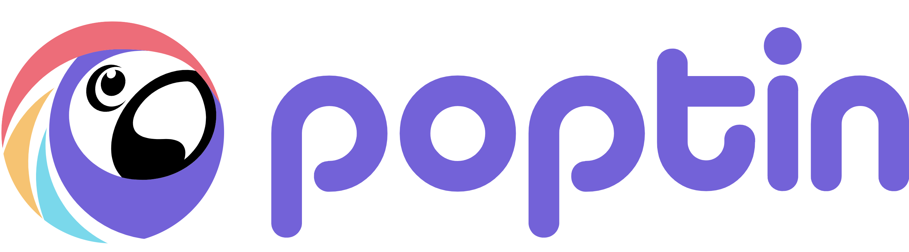

-
Product Manager
Digital Marketer
SEO Specialist
Content Marketer
WordPress Developer
Hello, I am Md. Ashiquzzaman Kiron, Product Manager & Digital Marketer based at Dhaka, Bangladesh
My expertise lies within - product management, digital strategy, WordPress product development, content marketing among many other things.
Other than working I enjoy exploring world history, running and learning new stuff for fun. Selective extrovert, down to earth and good with people.
Key Achievements
Poptin
Product Manager of 3 SaaS products (700k+ users) for Poptin, Prospero & Klutch (Backlog prioritization, product roadmap & vision, Agile, Scrum management). Led a cross-functional team of 35+ members to achieve 1 Million+ ARR for PLG and shipped over 100 high-impact features.
weMail
Product Manager of weMail SaaS product (20,000+ active users) for weDevs (Product Management, Roadmap, vision, Agile, Scrum management)
Drivearabia.com
DriveArabia is the largest automotive consumer portal in the Middle East region, serving an audience of over 500,000 users each month. Working closely with their editorial team working on SEO, targeting right keywords, site optimization, improving user experience, fixing Google Console issues DriveArabia.com was relaunched, leading to an increase of 20% in visits within the first quarter in 2018
asphaltthemes.com
Founded and successfully executed the launch of https://asphaltthemes.com , Making its revenue go into seven-figure BDT.
Food Swingers Dhaka
Helped formulate marketing strategy for the Food Swinger restaurant in Uttara. Making over BDT 50k monthly (Predated in 2018)
Capital Logistics BD
Developed the website for Capital Logistics BD - https://www.capitalbd.net/
Royalstar.ae
Working with developers for SEO centric design and proper HTML structure to make sure search engines love the site, optimized website for lightweightness and clean markup
Past clients
Projects
- WP Themes
- Portfolioo
- Resumee
- Cvee
- Tar
- Website Developed
- Capitalbd
- Rumon Motors
- Asphalt Themes
- WP Plugins
- Accordion Block
- Social Share
- VSC Extensions
- WordPress Gutenberg Components List
Work Experience
-
- Oversee the strategy, roadmap, and regular updates (new features, bug fixes) for the three plugins to ensure they remain competitive and compatible with the latest WordPress trends
- By analyzing user feedback, tickets and reviews, identify pain points and areas for improvement, then address these proactively to keep users happy and engaged
- Stay up-to-date with industry trends, competitors, and new technologies, adjusting plugin strategies to ensure they're always on the cutting edge of the WordPress ecosystem
- Define and execute marketing campaigns, build partnerships, and find creative ways to monetize the plugins.
- Set KPIs, track performance, and drive both user growth and revenue
-
Product Manager (Remote) – Poptin LTD - June, 2021 to December, 2024 
- Product Manager for multiple SaaS platforms - Poptin, Prospero & Klutch
- Poptin (Conversion optimization SaaS platform), Prospero (Online Proposal SaaS platform), Klutch (Knowledge base SaaS Platform)
- Coordinate with different stakeholders to drive new features, and maintain roadmaps (Developers, Designers, QA & Founders)
- Plan UX refinements, new features and UI enhancements, wireframing, mock-ups
- Built UI/UX requirements, and suggest improvements for reducing churning customers
- Accelerated +42% ARR by launching Prospero 2.0 ( with new features & UI and helped the team stay on the roadmap
- Helped successful launch of Klutch app
- Spearheaded 6.0%+ ARR growth for Poptin by introducing all the Shopify features
- Led multiple teams of 35+ people consisting of 3 products for day-to-day operation, aligning with product roadmap & wireframing new features & jumping into support
- Partnered with Wix for Prospero integration: Launched Wix’s proposal service through deep integration
- Working with the Poptin team for a full-blown Email Platform - Poptin Email
- Provide support for Poptin & Prospero app to get user perspective & QA testing products
- Shipped 100+ features: Managed end-to-end execution from specification to production
- Streamlined analytics and feedback: Used data and user feedback to drive continuous product improvements
-
Digital Marketing Manager/Product Manager (Hybrid) – weDevs - August, 2019 to June, 2021

- Plan, manage and analyze data-driven digital marketing campaigns
- Create a holistic communication and brand strategy across all digital and physical marketing materials
- Perform market research and competitive analysis to improve our products
- Collect, monitor and analyze social and website metrics, and make improvements accordingly
- Develop frameworks, design product narratives, and other deliverables as necessary to communicate recommendations.
- Led internal education for support personnel regarding customer satisfaction, refunds, and saves
- Launched the first onboarding email series for customers resulting in increased interaction
- Built churning customer feedback survey, including UI/UX requirements, and led qualitative research for churning customers, regularly sharing customer insights and voice of the customer
- Partnered with engineering and support to make changes to future product development related to key insights from user feedback
- Led a cross-functional team, including engineers and UX designers, focused on improving Product UI/UX
- Manage a secondary product of 40,000+ active users as a part of the primary product strategy
- Act as Product Manager for weMail (SaaS email marketing platform- 20,000+ DAU)
- Manage Developers/Designers/Content & Marketing team
- User acquisition/growth hack/UX refinements
- Achieve yearly KPI & user acquisition as per the timeline
-
Founder - Asphalt Themes – June 2015 to Present

- Develop themes, plugins & provide support
- Plan, write and coordinate content marketing
- Manage Ads / Blogger outreach programs
- Develop product marketing strategy
-
Contributor - WordPress.org – January 2021 to Present

- Develop themes, plugins & provide support
- Plan, write and coordinate content marketing
- Manage Ads / Blogger outreach programs
- Develop product marketing strategy
-
Co-Founder - WP Plugin Directory (WPD) – April 2014 to Present

- Translation Contributor
- Training Contributor
- WordCamp Northwest Ohio Speaker
- Rota weekly meeting note-taker @Design team, Regular weekly meeting note-taker @Training, Learn, theme & Doc team
- Participate in weekly triage, coffee break & show & tell session
- Facilitate meeting with contributor all around the world
- Plugin review
- Manage plugin submission
- Outbound & Inbound marketing for the website
- Manage ABlogger outreach programs
-
WhiteSpot Digital - Digital Strategist – May, 2017 to July, 2019

- Develop & manage clients’ web development/software projects
- Develop/manage digital strategies for clients
- - Support digital marketing team & client service, executives
- Plan SEO, SMS, Email, Social Media & Advertising Campaigns
- Create, manage & report to clients regarding Ad campaigns
- Measure and report performance of all digital marketing campaigns, and assess against goals (ROI and KPIs)
- Identify trends and insights and optimize spend and performance based on the insights
- Collaborate with internal teams and vendor partners to create landing pages and optimize the user experience
- Utilize the strong analytical ability to evaluate end-to-end customer experience across multiple channels and customer touchpoints
-
Double A Pulp & Paper Bangladesh Ltd - Channel Development Executive - January, 2013 – Jun, 2015

- Develop Coordinate & Evaluate distributors/dealers for channel targets
- Prepare & present sales forecast and report to higher management, advice on market strategies
- Monitor marketing/sale promotions to achieve its target, handling customer issues and follow up
- Key Achievements – Channel Mapping, Assisted in establishing Quality Paper Mill operation, Quality Paper Mill Limited (June 1, 2013 –September 30, 2013)
- Develop & coordinate sales plan for QPM LTD
-
G4S Security Services Bangladesh (P) Ltd - Deputy Assistant Manager - Aug, 2012 – Dec, 2012

- Management of security 500+ security personnel and facilitate training
- Facilitating, Negotiating, Handling with customers for smooth operations
- Guide, motivate and monitor security personnel to maintain SOP
- Key Achievements - Successfully managed 30+ clients with 500+ security personnel
-
Robi Axiata Limited - Intern (CSR Department) - Jan, 2012 – Apr, 2012

- Worked on CSR projects & assist managing agency partners
- Assist in PR related issues, survey, event management, proposal, documentation of CSR projects
- Proposal writing, creating presentation, writing reports, communicating vendors, overseeing events
Skills & Work Tools
- Programming Skills: HTML, CSS (SASS, PostCSS, Bootstrap, BEN) , WordPress, PHP, MySQL, JavaScript (jQuery, Gulp, React, Node JS), Chrome & Firefox Dev Tools, GitHub, Bitbucket, SVN, PSD to HTML to WordPress, Markdown
- Others Skills: SEO, Photoshop (PSD to HTML), Content Marketing, Blogging, Agile
- Product management tools: favro.com, monday.com, Envoyer.io, Trello, GTM, UAT, SDLC, Hotjar, specification, Postman, backlog prioritization
- Language Skills: Bangla (native), English (professional) and Hindi(conversational) & Basic Spanish
- Analytics Tool: Google Analytics, Microsoft Clarity, Intercom, Crisp, internal company tool, MarTech
- Methodology: Agile, Sprint, Kanban, Daily Scrum, Waterfall, SAFe, Lean Product Management
- Design & Prototyping: Mockup, Figma, Balsamiq, Whimsical, Photoshop, HCI (Human-Centered Interface)t
- Project Tools: Slack, GitHub, BrowserStack, Mailosaur, Mailtrap, Jira, Asana, Google tools
- SEO Tools: SEO Quake, Google Correlate, Mozbar, Google analytics, Alerts, Trends Webmaster Tool, UTM Parameter, Keyword planner, KWfinder, Portent, CoSchedule headline analyzer, SEO Yoast, SEMRush Rank, Backlinko
- CMS:WordPress, Shopify, Wix
Education
- BRAC University, 2011● Bachelor of Business Administration, concentration in Marketing & Human resource ● GPA -3.18
- Notre Dame College, 2006 ● H.S.C, concentration in Humanities ● GPA -4.4 out of 5
- Motijheel Model High School & College, 2004 ● S.S.C, concentration in Humanities ● GPA -4.5 out of 5
Extra Curriculum Activities
- Worked as Joint secretary of Entrepreneur Development Forum [EDF], Summer 09- Fall 09
- Worked as “Grass Cutter” during social day of residential semester in TARC [Summer 2008]
- Member of Notre Dame Adventure Club[August 2004 - January2006]
- Anchored Seminar [June 27 2009], Workshop [“History of an Entrepreneur” July 2009]
- Participated in Inter-Dorm Debate & cricket competition[Summer 2008]
- Organized Club fair *“Dugdugi” 10th October fall 09], TARC summer 08 reunion [10th June, 2011]
- Organized Seminar with the owner of Azad products * “History of an Entrepreneur” July 2009 +
- Worked as an Executive member of Bizbee club of BRACU, Summer 09
- Participated in Biz Maestro program of Unilever [September 2011]
- Organized one-day tour in Comilla[17th July 2009] and in Habiganj [4th December 2009]
- Participated in BRACU underground football tournament [ July 2010, 25th-27th November 2010 ]
- Participated in BRACU Inter-semester football tournament [Spring 2011, Spring 2012]
- Organized Bangladesh Unreal Tournament(summer ‘08) & in house/national gaming events
Voluntary Activities
- Volunteered in BRAC’s 35th anniversary in Army Stadium [15th February 2008]
- Volunteered in “The Interview” fall ’09 on 19th November 2009.
Award, Achievements & Certifications
- Received Dean Certificate for outstanding Academic result in spring 2011 semester
- Member of inter-semester football tournament champion team [Spring 2012]
- Content Marketing Certified by Hubspot Academy
- Twitter Flight School Graduate
- Google Analytics for Beginners Certified by Google Analytics Academy - Valid til March 12, 2020
- Advance Google Analytics Certified by Google Analytics Academy - Valid til March 13, 2020
- Google Tag Manager Fundamentals Certified by Google Analytics Academy - Valid til March 14, 2020
- E-Commerce Analytics: From Data to Decisions Certified by Google Analytics Academy - Valid til March 15, 2020
- Digital Sales Certification Certified by Google Academy for Ads - Valid til March 18, 2020
- DoubleClick Search Basics Certified by Google Academy for Ads
- The Fundamentals of Digital Marketing by Google Digital Garage
- Google Analytics for Power User by Google Analytics Academy - Valid till May 1, 2022
- Getting Started With Google Analytics 360 by Google Analytics Academy - Valid till May 1, 2022
- Introduction To Data Studio by Google Analytics Academy - Valid till May 1, 2022